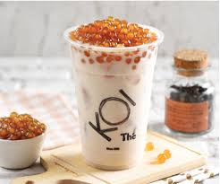

Pouring joy
One cup at a
Time
Bubble tea isn’t just a drink — it’s an experience. From the first sweet sip to the playful pop of chewy pearls, every cup is a little celebration. Discover endless flavors, fun textures, and a moment of pure joy, one bubble at a time.
Learn what goes in your regular Bubble milk tea!
Bubble
blahblahblahblahblah
Milk Tea
blahblahblahblahblah
Additional Toppings
blahblahblahblahblah
The stand?!
blahblahblahblahblah
Order your own bubble tea!
place order

Timeline
Origins in Taiwan
1980sTea shops in Taiwan start experimenting by adding ingredients like fruit, syrup, and milk to tea. Read More
Rapid popularity in Taiwan
Late 1980s - 1990sBubble tea explodes in popularity across Taiwan. Shops start competing with new flavors, sweeteners, and types of chewy pearls (black, white, mini). Becomes a staple of Taiwanese street food culture and night markets. Read More
Spreading across Asia
1990s - Early 2000sBubble tea makes its way to Hong Kong, China, Japan, South Korea, and Southeast Asia. Flavors diversify with local ingredients like taro, matcha, coconut, and more. By the early 2000s, bubble tea is firmly rooted as a fun, youthful drink across East Asia. Read More
Internation expansion
2000s - 2010sBubble tea chains and Taiwanese immigrants bring boba to the U.S., Canada, Australia, Europe. Major cities like Los Angeles, New York, and London see their first dedicated bubble tea shops. Social media helps popularize bubble tea’s colorful, photogenic appeal. Read More
Bubble Tea Boom & Innovation
2010s - Early 2020sHuge global boom with Instagrammable variations: Cheese foam tea, brown sugar tiger milk tea, crystal boba, popping boba. Brands like Gong Cha, Tiger Sugar, and Coco become international giants. DIY kits and home machines become popular, especially during the COVID-19 lockdowns. Read More
Bubble Tea as Global culture Icon
2020s - presentBubble tea evolves from a trend to a global cultural staple. Seen in ice cream, cakes, even fashion collaborations. International bubble tea festivals & competitions emerge. Now represents youth culture, Asian diaspora identity, and playful food experimentation worldwide. Read More
Culture
Health Perceptions
Bubble tea is often seen as a guilty pleasure...
Bubble tea is often seen as a guilty pleasure. While it's loved for its sweet, chewy, and customizable appeal, it also faces criticism for: High sugar content – Many standard bubble tea drinks contain as much sugar as soft drinks, especially those with syrup-based flavorings or brown sugar pearls. Calorie-dense toppings – Tapioca pearls, cheese foam, and puddings are carbohydrate-heavy, contributing to high calorie counts. Perceived "naturalness" – Some fruit teas and Yakult blends are seen as healthier options, especially when paired with fresh ingredients and lower sugar levels. Modern brands often respond to these concerns by offering: Reduced sugar/ice levels Fresh fruit options Probiotic or green tea-based blends Plant-based milks
Aesthetic & Branding
Bubble tea is not just a drink — it's a lifestyle product
Bubble tea is not just a drink — it's a lifestyle product: Visual appeal is key: gradient layers, colorful pearls, and cheese foam caps make the drinks highly “Instagrammable.” Many brands focus on distinct cup designs, limited-edition collaborations (e.g., with anime or K-pop groups), and cute mascots to attract younger demographics. Interior design of bubble tea outlets often mirrors café culture — cozy, stylish, and youth-oriented. This branding strategy turns bubble tea from just a beverage into a cultural symbol of fun, youth, and trendiness.
Global Spread
Originally from Taiwan..
Originally from Taiwan, bubble tea has rapidly spread across the globe: It’s now a staple in East and Southeast Asia, especially in cities like Singapore, Bangkok, Seoul, and Tokyo. It has also gained massive popularity in Western countries, such as the U.S., Canada, Australia, and parts of Europe, driven by Asian diaspora and global food curiosity. Chains like Gong Cha, KOI Thé, and Tiger Sugar have gone international, with localized menus and marketing strategies. New variations — such as bubble tea ice cream, mochi, or cake — have emerged, further expanding its global cultural footprint. Bubble tea’s global success is tied to its versatility, personalization, and youth-driven appeal.
hi
hi

Bubbly Tea
Tea combined with soda water or carbonated flavors, giving a fizzy twist to the usual bubble tea. Often paired with fruit syrups and popping pearls.

Liho
Liho
Cheese teas and fresh fruit teas
REVIEWS
GONGCHA
Yelp reviewer: “When this place first opened, the lines went on forever… it does taste pretty good—but there are other places that sell pretty okay Bubble Tea too.”
GONGCHA
TripAdvisor (Plaza Singapura outlet): Rated around 4.1/5, with comments noting consistent milk tea quality and decent pearls.
GONGCHA
Reddit comment: About toppings: “Toppings wise, you can't go wrong with mixed pearls, herbal jelly, aloe vera…”
KOI
TripAdvisor: “The Koi tea is our favourite! It’s yummy. You can customise your tea with less sugar and ice. The service is good and quick.”

Review 2
KOI
Burpple review: “Glad that the queue wasn't that bad and I managed to get my order within 10 minutes.”
KOI
Lemon8/Reddit snippet: “Many regulars at KOI have found this balance makes the drink not only enjoyable but also refreshing.”
LIHO
TripAdvisor: “Wanted to try the cheese tea… Service was quick, the drink was thick, frothy and nice. I enjoyed it.”
LIHO
Yelp profile: Emphasizes signature local offerings: “Brown Sugar Pearl, Avocado and Fruit Tea are what LIHO does best and it is the heart of our brand…”

LIHO
Reddit commentary: “Liho is ok, but used to be considered budget, now no longer budget so drink less.”
ITEA
r/askSingapore (Reddit): “The new wintermelon tea w tea jelly is p good, else honey green tea. Also their taro ball desserts are p good.”
ITEA
Tampines Hub review: “Very yummy drinks and friendly service… the drinks are very affordable, and they give you a stamp card for a free drink after 10 purchases.”
ITEA
Lemon8 review: “Itea Matcha Latte [...] light and refreshing” (rated ~3/5).
R&B
TripAdvisor: Rated around 3.8/5 with mixed but moderate feedback.
R&B
Burpple (Marina Square): “Definitely my place to go for brown sugar bb tea! In my personal opinion, R&B got the best brown sugar bb tea because of their fragrance & thick brown sugar ...”
R&B
Yelp/Toa Payoh outlet: “I opt for the 70% Level of Sugar and Golden Boba… My order comes with Orange Rinds, Pineapple Bits and I was surprised a WHOLE hollow orange was included…”
SanChen
TripAdvisor: “Love their traditional 国王奶茶 the most. Heavy milk tea taste. The pearls are very chewy and good to go with 0% sugar. Friendly staff.”
SanChen
Reddit user: “I tried the bubble milk tea less sugar less ice … guys I think I've just found my ultimate source of happiness!!!”
SanChen
Yelp profile: “The preparation and presentation of the tea was so meticulous and graceful.… From the first taste of my sakura oat milk tea, it was undeniably perfect.”